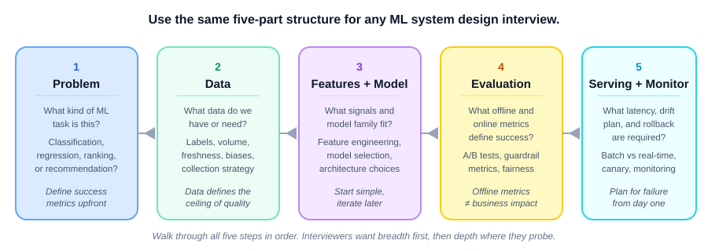

Explore this chapter with hands-on visualizations: ML System Design Canvas, Algorithm Flashcards, Complexity Cheat Sheet
Data science and ML interviews test four things: ML concepts, coding and SQL, system design, and case studies. This chapter equips you with frameworks and worked examples for each type.
What you will learn:
| Section | Topic |
|---|---|
| 18.1 | ML concept questions: definitions, trade-offs, formulas |
| 18.2 | Coding and SQL interview questions |
| 18.3 | ML system design: end-to-end framework |
| 18.4 | Statistics and A/B testing questions |
| 18.5 | Behavioral interview questions |
| 18.6 | ML case study framework (generic approach) |
| 18.7 | Case study: fraud detection pipeline |
| 18.8 | Case study: search ranking |
| 18.9 | Case study: demand forecasting |
How to use this chapter: Read the frameworks in 16.1–16.6, then practice by working through the case studies (16.7–16.9) out loud before checking the discussion.
Use this structure for almost every definition question:
Definition (what it is) → Trade-off (when it helps vs. hurts) → Example (concrete application)
Interviewer: “What is L1 regularization?”
Bad answer: “It adds the sum of absolute values of weights to the loss.”
Good answer: “L1 regularization adds \(\lambda \sum |w_j|\) to the loss. This penalizes large weights and drives some all the way to zero — creating sparse models, so it acts as implicit feature selection. It helps when you have many irrelevant features, but it can be unstable when features are correlated because it arbitrarily zeros one of them.”
Bias–variance trade-off:
\[ \text{Error} = \text{Bias}^2 + \text{Variance} + \text{Irreducible Noise} \]
You reduce bias by making the model more complex; you reduce variance by constraining it. The two pull in opposite directions — the “tradeoff.” The best model minimises their sum.
| Model | Bias | Variance | Fix |
|---|---|---|---|
| Too simple (underfit) | High | Low | Add features, increase complexity |
| Too complex (overfit) | Low | High | Regularize, more data, simpler model |
Interview angle: Always ask what the data situation is. With small data, a simpler model with higher bias often generalizes better than a complex model with high variance.
Regularization:
| Type | Penalty | Effect |
|---|---|---|
| L1 (Lasso) | \(\lambda \sum |w_j|\) | Sparsity — drives weights to zero, feature selection |
| L2 (Ridge) | \(\lambda \sum w_j^2\) | Shrinkage — keeps all weights small but nonzero |
| Elastic Net | \(\alpha L1 + (1-\alpha) L2\) | Combines both — useful when features are correlated |
Cross-validation:
K-Fold CV:
| Fold 1 | Fold 2 | Fold 3 | Fold 4 | Fold 5 | |
|---|---|---|---|---|---|
| V | T | T | T | T | validate on first block |
| T | V | T | T | T | fold 2 |
| . . . K rounds → average metric | |||||
Key: Never tune hyperparameters on the test set. Use K-fold on the training set to select model; evaluate once on held-out test set.
Gradient descent variants:
| Variant | Batch size | Pros | Cons |
|---|---|---|---|
| Batch GD | All data | Stable convergence | Slow per step |
| SGD | 1 sample | Fast updates | Very noisy |
| Mini-batch SGD | 32–512 | Balance of both | Tuning required |
| Adam | Mini-batch | Adaptive LR, fast convergence | Memory overhead |
Activation functions:
| Function | Formula | Use case |
|---|---|---|
| ReLU | \(\max(0, x)\) | Hidden layers — default choice |
| Sigmoid | \(1/(1+e^{-x})\) | Binary output (not hidden layers) |
| Softmax | \(e^{x_i}/\sum e^{x_j}\) | Multi-class output |
| Tanh | \((e^x - e^{-x})/(e^x+e^{-x})\) | RNNs, zero-centered |
Common classification metrics:
| Metric | Formula | Use when |
|---|---|---|
| Precision | \(TP/(TP+FP)\) | Cost of false positive is high (spam filter) |
| Recall | \(TP/(TP+FN)\) | Cost of missing a positive is high (cancer screening) |
| F1 | \(2PR/(P+R)\) | Imbalanced classes |
| AUC-ROC | Area under TPR vs FPR | Ranking/threshold-agnostic evaluation |
| PR-AUC | Area under precision-recall curve | Severe class imbalance |
Key: “Which metric should I optimize?” is always context-dependent. Ask about the cost asymmetry between false positives and false negatives.
CNN output size formula:
\[ C = \frac{I - F + 2P}{S} + 1 \]
Where: \(I\) = input size, \(F\) = filter (kernel) size, \(P\) = padding, \(S\) = stride.
Example: input \(28 \times 28\), filter \(7 \times 7\), stride \(1\), padding \(0\):
\[ C = \frac{28 - 7 + 0}{1} + 1 = 22 \quad \Rightarrow \text{output: } 22 \times 22 \]
Confusion matrix:
| Predicted | |||
| Pos | Neg | ||
| Actual | Pos | TP | FN |
| Neg | FP | TN | |
| Pitfall | What happens | How to catch it |
|---|---|---|
| Data leakage | Test performance is suspiciously perfect | Verify no future data in features; fit preprocessors on train only |
| Target leakage | Feature is unavailable at prediction time | Timeline audit of every feature |
| Class imbalance | Accuracy looks great; recall is terrible | Check confusion matrix; use PR-AUC |
| Distribution shift | Production accuracy degrades over time | Monitor feature distributions |
| Overfitting | Train score >> val score | Cross-validate; regularize |
Pattern 1: NULL handling
NULL means unknown — comparing with = NULL
always returns NULL (falsy).
-- Wrong
SELECT * FROM Employees WHERE ManagedBy = NULL;
-- Correct
SELECT * FROM Employees WHERE ManagedBy IS NULL;Pattern 2: Window functions
Interviewers love window functions because most candidates can write basic GROUP BY but struggle with window functions.
-- Running total of revenue per customer
SELECT
customer_id,
order_date,
revenue,
SUM(revenue) OVER (
PARTITION BY customer_id
ORDER BY order_date
ROWS BETWEEN UNBOUNDED PRECEDING AND CURRENT ROW
) AS running_total
FROM orders;
-- Rank users by revenue within each region
SELECT
user_id,
region,
revenue,
RANK() OVER (PARTITION BY region ORDER BY revenue DESC) AS rnk,
ROW_NUMBER() OVER (PARTITION BY region ORDER BY revenue DESC) AS rn
FROM users;Pattern 3: Self-join (finding hierarchies)
-- Employees and their managers' names
SELECT
e.name AS employee,
m.name AS manager
FROM Employees e
LEFT JOIN Employees m ON e.manager_id = m.id;Pattern 4: Top-N per group
-- Top 3 products by revenue per category
SELECT * FROM (
SELECT
product_id,
category,
revenue,
ROW_NUMBER() OVER (PARTITION BY category ORDER BY revenue DESC) AS rn
FROM products
) t
WHERE rn <= 3;Pattern 5: Cohort retention
-- Weekly retention: % of users who were active in week N who return in week N+1
WITH cohort AS (
SELECT user_id, MIN(DATE_TRUNC('week', event_date)) AS cohort_week
FROM events GROUP BY user_id
),
weekly_activity AS (
SELECT DISTINCT
user_id,
DATE_TRUNC('week', event_date) AS activity_week
FROM events
)
SELECT
c.cohort_week,
DATEDIFF('week', c.cohort_week, w.activity_week) AS weeks_since_join,
COUNT(DISTINCT w.user_id) AS retained_users
FROM cohort c
JOIN weekly_activity w USING (user_id)
GROUP BY 1, 2
ORDER BY 1, 2;Palindrome number (integer reversal, no string conversion):
def is_palindrome(n: int) -> bool:
if n < 0:
return False
original = n
rev = 0
while n > 0:
digit = n % 10
rev = rev * 10 + digit
n //= 10
return original == rev
# Test
print(is_palindrome(121)) # True
print(is_palindrome(-121)) # False
print(is_palindrome(10)) # FalsePandas: common interview patterns
import pandas as pd
# 1. Group and aggregate
df.groupby('category').agg({'revenue': ['sum', 'mean'], 'orders': 'count'})
# 2. Percentage of total per group
df['pct'] = df.groupby('category')['revenue'].transform(
lambda x: x / x.sum()
)
# 3. Rolling mean (time series)
df.sort_values('date', inplace=True)
df['rolling_7d'] = df.groupby('user_id')['revenue'].transform(
lambda x: x.rolling(7, min_periods=1).mean()
)
# 4. Merge with type awareness
merged = df_left.merge(df_right, on='id', how='left')
# 5. Fill missing values
df['feature'] = df['feature'].fillna(df['feature'].median())Normal distribution quick reference:
\[ z = \frac{x - \mu}{\sigma} \]
| z-score | Area from mean to z |
|---|---|
| ±1σ | 68% of data (34% each side) |
| ±2σ | 95% of data (47.5% each side) |
| ±3σ | 99.7% of data |
Example: \(X \sim \mathcal{N}(70, 10^2)\), find \(P(70 < X < 90)\):
Use this structure for any ML system design question:

Before choosing a model, define:
| Question | Why it matters |
|---|---|
| What is the ML task? | Regression vs. classification vs. ranking vs. generation |
| What is the prediction target? | Must be available at training time but absent at serving time |
| What are the latency constraints? | Batch (hours acceptable) vs. real-time (< 100ms) |
| What is the success metric? | Business KPI, not just model accuracy |
| What is the baseline? | Always define the naive baseline first |
Data pipeline for training vs serving:
Offline training pipeline:
Raw events → ETL → feature computation → training dataset → model training
Online serving pipeline:
Request → real-time feature lookup (feature store) → model scoring → response
Key: Training features and serving features must be computed identically. Divergence here is a leading cause of production model underperformance.
Feature engineering principles:
| Feature type | How to handle |
|---|---|
| High-cardinality categoricals | Embedding layers or frequency encoding |
| Numerical | Standardize for neural nets; leave raw for trees |
| Time features | Cyclical encoding (sin/cos) for hour/day_of_week |
| Text | TF-IDF for baselines, embeddings for production |
| Missing values | Indicator flag + imputation |
Model selection guidance:
| Data situation | Best starting model |
|---|---|
| < 10K labeled examples | Logistic regression / linear models |
| Tabular, any size | XGBoost / LightGBM |
| Images / audio | CNN / pretrained ResNet |
| Text | BERT / pretrained transformer |
| Sequence / time series | LightGBM + lag features; LSTM/TFT for DL |
| Ranking | LightGBM with LambdaRank |
Always define two layers of evaluation:
| Layer | What to measure | Example |
|---|---|---|
| Offline (development) | ML metric on held-out data | AUC-PR @ threshold, NDCG@10 |
| Online (production) | Business metric via A/B test | CTR, conversion rate, revenue per user |
Key: Don’t optimize the offline metric in isolation. Always connect it to the business goal.
Online vs. batch serving:
| Mode | Latency | Use case |
|---|---|---|
| Online (real-time) | < 100ms | Fraud detection, recommendation |
| Batch | Hours | Demand forecasting, report generation |
| Near-real-time | 1–30s | Content ranking, search |
ML platform architecture:
Production monitoring checklist:
| What to monitor | Why |
|---|---|
| Input feature distributions | Detect data drift early |
| Prediction score distributions | Detect model output drift |
| Business metrics (CTR, conversion) | Ground truth of model health |
| Latency p50/p99 | SLA compliance |
| Error rate and fallback rate | System health |
Stateless serving principle:
Stateless app tier:
User → Load Balancer → Any healthy server → Feature Store + Model → Response
(no session state on server)
Benefits: horizontal scaling, easy failover, no sticky session problems
Prompt: “Design a recommendation system for a music streaming platform with 50M users and 30M tracks.”
Step 1: Problem framing
Task: rank items to maximize engagement (listens, saves, shares)
Metric: listen-through rate, save rate (not just CTR)
Constraint: 50ms response time for homepage refresh
Step 2: Data
Step 3: Features and model
Step 4: Evaluation
Step 5: Serving
The standard framework:
Common mistake: Confusing p-value with probability that H₀ is true. The p-value is P(data as extreme as observed | H₀ is true).
| Step | What to do |
|---|---|
| 1. Define the metric | What is the primary metric? What are guardrail metrics? |
| 2. Power analysis | How many users needed to detect effect of size X? |
| 3. Randomize | Split at user level, not session level |
| 4. Run experiment | Don’t peek early; run for full duration |
| 5. Analyze | t-test for means, chi-square for proportions |
| 6. Decision | Ship, rollback, or run longer |
Sample size formula:
\[ n = \frac{2(z_{\alpha/2} + z_\beta)^2 \sigma^2}{\delta^2} \]
Where: \(z_{\alpha/2}\) = critical value for significance level, \(z_\beta\) = critical value for desired power, \(\sigma^2\) = estimated metric variance, \(\delta\) = minimum detectable effect.
Example interview question: “Your A/B test ran for 2 weeks and CTR improved 3% with p=0.03. Should you ship?”
Good answer: “Not necessarily — I’d check: 1. Did we run long enough to capture weekly seasonality? (2 weeks: yes) 2. Is the primary metric the right one? What happened to revenue, retention, and guardrail metrics? 3. Is this practically significant, not just statistically? What’s the business impact of 3% CTR improvement? 4. Are there segment effects — did it help one user group and hurt another?”
| Pitfall | What happens | Fix |
|---|---|---|
| Multiple testing | P(false positive) compounds with each test | Bonferroni correction or FDR control |
| Peeking early | Inflated false positive rate | Pre-register test duration; use sequential testing |
| Non-independent units | Users who interact affect each other (social, sharing) | Network experiment design |
| Novelty effect | Users engage more with anything new | Run test long enough for novelty to fade |
| SRM (sample ratio mismatch) | Treatment and control sizes differ from expected | Investigate before interpreting results |
| Distribution | Parameters | When it appears |
|---|---|---|
| Normal | \(\mu\), \(\sigma\) | CLT, errors, natural measurements |
| Bernoulli | \(p\) | Single binary event |
| Binomial | \(n\), \(p\) | Count of successes in \(n\) trials |
| Poisson | \(\lambda\) | Count of events in a time window |
| Exponential | \(\lambda\) | Time between events |
| Beta | \(\alpha\), \(\beta\) | Prior for conversion rate; Thompson Sampling |
Central Limit Theorem (CLT): The sum of \(n\) independent, identically distributed random variables approaches a normal distribution as \(n \to \infty\), regardless of the original distribution. This is why t-tests work on non-normal data when \(n\) is large.
Every behavioral question should be answered with:
| S — Situation | Context. What was the setup? |
| T — Task: | What was your responsibility? |
| A — Action: | What did YOU do? (not "we") |
| R — Result: | Quantifiable outcome. |
“Tell me about a time you disagreed with a stakeholder.”
Key elements: you listened first, understood their perspective, presented data, found a compromise or escalated appropriately. Show intellectual humility and ability to navigate ambiguity.
Structure: “The PM wanted to launch a model with 70% recall on fraud. I was concerned that our false positive rate was too high — 1 in 4 blocked transactions would be legitimate. I presented the cost analysis: at our transaction volume, that meant $X in customer friction costs per month. We aligned on a recall of 80% with a stricter FPR threshold, and I automated a review queue for borderline cases.”
“Tell me about a time you had to deliver bad news.”
Show: proactive communication, clear framing, proposed solutions alongside the problem.
“Tell me about a project where you had to learn something quickly.”
Show: structured learning approach, ability to identify what matters, applying new knowledge in practice.
“Tell me about a time your model underperformed in production.”
This is a trap question — interviewers want to see that you’ve shipped something and that you debugged it well, not that you’ve had perfect success. Be specific about: how you detected it, how you diagnosed it (data drift? training skew? missing feature?), how you fixed it.
| Question | What they’re testing |
|---|---|
| “Walk me through your most impactful project” | Technical depth, business sense, communication |
| “How do you communicate results to non-technical stakeholders?” | Translation skill, executive presence |
| “How do you prioritize competing data requests?” | Judgment, stakeholder management |
| “Tell me about a time you caught a data quality issue” | Rigor, attention to detail |
| “What’s a model you built that didn’t work? What happened?” | Intellectual honesty, debugging mindset |
Before your interview, have clear answers for:
When given an open-ended ML problem in an interview, use this structure:
| What you do | Signal you send |
|---|---|
| Ask clarifying questions first | Structured thinker, not hasty |
| Define a baseline model | Pragmatic, knows what “good” means |
| Call out data challenges (imbalance, drift, cold start) | Production mindset |
| Connect ML metric to business metric | Strategic thinker |
| Propose monitoring plan | MLOps maturity |
| Acknowledge trade-offs | Intellectual honesty |
Key: Interviewers don’t expect a perfect answer. They want to see how you think through ambiguity and complexity. Talk through your reasoning aloud.
Problem statement: Given a transaction (amount, merchant, location, time, device, user history), predict whether it is fraudulent in real-time — within 100ms.
| Type: | Binary classification (fraud = 1, legit = 0) |
| Constraint: | Real-time inference < 100ms |
| Label: | Confirmed fraud (from chargebacks, investigations) |
| Base rate: | ~0.1% of transactions are fraud |
| Key challenge | Extreme class imbalance + evolving fraud patterns |
Baseline: Flag every transaction above $5,000. Precision and recall will both be low — establishes the bar.
| Feature category | Examples | Notes |
|---|---|---|
| Transaction | amount, merchant_category, currency | Normalize amount; encode category |
| Velocity | txn_count_last_1h, spend_last_24h | Requires real-time feature store |
| Device / location | is_new_device, distance_from_home_km | High signal for account takeover |
| User history | avg_txn_amount, usual_merchant_types | Baseline “normal” behavior |
| Time | hour_of_day, day_of_week, is_holiday | Fraud spikes at night, weekends |
| Network | ip_fraud_rate, device_shared_count | Graph / network signals |
With 0.1% fraud rate, a model that always predicts “legit” gets 99.9% accuracy — and is useless.
class_weight={0:1, 1:100} in sklearnKey metric: Precision-Recall AUC, not ROC AUC. At extreme imbalance, ROC is misleading.
| Model | Why useful for fraud |
|---|---|
| XGBoost / LightGBM | Strong on tabular, handles class weights, fast inference |
| Logistic Regression | Interpretable, fast, well-calibrated probabilities |
| Isolation Forest | Unsupervised anomaly detection when labels are scarce |
| Neural network | When millions of examples and embedding layers needed |
In practice: ensemble — LightGBM for main score + rule-based blocklist + velocity checks.
| Metric | Why |
|---|---|
| Precision | Of transactions blocked, how many were actually fraud? |
| Recall | Of all fraud, how much did we catch? |
| F1 @ threshold | Combined; tune threshold to match business cost ratio |
| PR-AUC | Threshold-independent, correct for imbalanced classes |
| Latency p99 | Must stay under 100ms |
Problem statement: Given a user query and a corpus of documents/products/results, rank them so the most relevant items appear at the top.
| Property | Value |
|---|---|
| Type | Learning to Rank (LTR) — not binary classification |
| Input | (query, candidate documents) pairs |
| Output | Relevance scores → ranked list |
| Metric | NDCG@10, MRR, Recall@K |
| Key challenge | Defining "relevant" + handling query-document interaction |
Baseline: BM25 (keyword matching) — fast and surprisingly competitive on keyword queries.
| Stage 1: RETRIEVAL (recall) | |
|---|---|
| Goal | find ~1,000 candidates |
| Speed | < 10ms |
| Method | BM25, vector search (ANN), or sparse + dense hybrid |
| Focus | Recall matters most |
| Stage 2: RANKING (precision) | |
|---|---|
| Goal | rank those 1,000 well |
| Speed | < 100ms acceptable |
| Method | LightGBM LambdaMART, two-tower re-ranker |
| Focus | Precision at top matters most |
Query → [BM25 + ANN retrieval] → 1,000 candidates → [LTR model] → top 10
| Feature type | Examples |
|---|---|
| Query features | Query length, query type (navigational/informational), query frequency |
| Document features | PageRank, CTR, freshness, popularity, content quality |
| Query–document | BM25 score, semantic similarity, exact match, title match |
| User features | Personalization signals, past clicks, location, language |
| Contextual | Time of day, device, session context |
| Approach | How it works | Tradeoff |
|---|---|---|
| Pointwise | Predict relevance score per doc independently. Binary classification or regression. | Simple. Ignores relative ordering. |
| Pairwise | Predict which of two docs is more relevant. RankNet, LambdaRank. | Better. Still ignores full list structure. |
| Listwise | Directly optimize ranking metric (NDCG) over full list. LambdaMART. | Best quality. Used by most production systems. |
\[ \text{NDCG@k} = \frac{\text{DCG@k}}{\text{IDCG@k}}, \quad \text{DCG@k} = \sum_{i=1}^{k} \frac{2^{r_i} - 1}{\log_2(i+1)} \]
Where: \(r_i\) = relevance score at rank \(i\) (binary or graded), \(k\) = cutoff depth, IDCG = DCG of the ideal (perfect) ranking.
| Position | Discount factor | Interpretation |
|---|---|---|
| 1 | 1.00 | Full credit |
| 2 | 0.63 | 63% credit |
| 5 | 0.39 | 39% credit |
| 10 | 0.29 | 29% credit |
The higher a relevant result appears, the more NDCG credit you get.
Problem statement: Predict the quantity of a product that will be sold in a future time period (next week, next month) across thousands of SKUs and locations.
| Type | Time series regression (multi-step forecasting) |
| Target | Units sold per SKU per store per day/week |
| Horizon | 1 week ahead (operational) to 12 weeks (planning) |
| Key challenge | Thousands of series with different patterns, intermittent demand, promotions, seasonality |
Baseline: Seasonal naive — forecast = same week last year. Surprisingly hard to beat.
Each level has different data density and noise levels. Top-down vs. bottom-up aggregation matters.
| Feature type | Examples | Notes |
|---|---|---|
| Lag features | sales_lag_7, sales_lag_14, sales_lag_28 | Past values of the target |
| Rolling stats | rolling_mean_28, rolling_std_14 | Smooth out noise |
| Calendar | day_of_week, week_of_year, is_holiday, days_to_xmas | Captures seasonality |
| Price / promo | current_price, discount_pct, is_promoted | Demand drivers |
| External | weather, local events, competitor prices | When available |
| Product | category, brand, lifecycle_stage | Static attributes |
✗ WRONG: random train/test split
| Jan | Feb | Mar | Apr | May | Jun | Jul | Aug |
| T | V | T | V | T | T | V | T |
shuffled = leaks future into past
✓ RIGHT: rolling-window backtesting
| Train: Jan–Jun | Val: Jul | Test: Aug |
| Train: Jan–Jul | Val: Aug | Test: Sep |
| Train: Jan–Aug | Val: Sep | Test: Oct |
Report average RMSE / MAPE across all windows.
Key metrics:
| Metric | Notes |
|---|---|
| MAPE | Interpretable, but unstable near zero demand |
| RMSE | Penalizes large errors; good for cost-sensitive use |
| Bias | Is the model systematically over/under-forecasting? |
| WAPE | Weighted APE — handles zero-demand items better |
| Challenge | Approach |
|---|---|
| Intermittent demand (lots of zeros) | Croston’s method, Tweedie distribution, two-part model |
| New products (cold start) | Attribute-based similarity, group similar products |
| Promotions | Encode as features; build separate promo uplift model |
| Hierarchical consistency | Bottom-up aggregation or reconciliation (MinT) |
| Thousands of series | Global LightGBM model — one model for all SKUs with SKU features |
This section consolidates the most frequent mistakes across all topics — useful as a final sanity check before a technical interview or before deploying a model.
| Mistake | Why it matters | Fix |
|---|---|---|
| Fitting scaler/encoder on full dataset | Leaks test info into training | Fit on train only; transform val/test |
| Using future data as features | Model can’t use this at prediction time | Enforce temporal ordering |
| Dropping rows with missing values reflexively | Loses signal; biases if missingness is informative | Investigate pattern; impute or add missing indicator |
| Not checking for train/test distribution shift | Model degrades silently in production | Plot feature distributions; track drift |
| Label leakage (target encoded into features) | Model appears perfect on eval, fails in prod | Audit every feature against the label |
| Mistake | Why it matters | Fix |
|---|---|---|
| Evaluating on training data | Measures memorization, not generalization | Always use held-out validation |
| Ignoring class imbalance | Accuracy 99% on 1% fraud rate = useless model | Use PR-AUC, class weights, or resampling |
| Using default threshold (0.5) | Wrong for imbalanced classes | Tune threshold using precision-recall curve |
| Using accuracy for imbalanced problems | Misleading metric | Use F1, PR-AUC, or MCC instead |
| Mistake | Why it matters | Fix |
|---|---|---|
| Not normalizing inputs | Gradients explode or vanish | Standardize to mean=0, std=1 |
| Learning rate too high | Loss oscillates or explodes | Start at 1e-3 with Adam; use LR finder |
| Not using early stopping | Overfits to training data | Monitor val loss; stop when it stops improving |
| Using Softmax for multi-label problems | Outputs compete | Use sigmoid per label + binary cross-entropy |
| Using ReLU in regression output layer | Clips negative predictions to zero | Use linear activation for regression output |
Forgetting optimizer.zero_grad() in PyTorch |
Gradients accumulate across batches | Call it at the start of each training step |
| Mistake | Why it matters | Fix |
|---|---|---|
| Random train/test split for time series | Leaks future into training | Use chronological split always |
| Evaluating on test set during development | Burns the one honest look | Use validation set; save test for final report |
| Reporting accuracy without baseline | 99% sounds good until naive model also gets 99% | Always compare to majority-class / naive baseline |
| Not checking calibration | Model says 90% confident but is right 50% | Use Platt scaling or isotonic regression |
| Mistake | Why it matters | Fix |
|---|---|---|
| No monitoring after deployment | Models degrade silently | Track prediction distribution and feature distributions |
| Retraining without evaluation | New model might be worse | Always validate new model against champion before promoting |
| Serving a model trained on old data | Performance degrades with data drift | Schedule regular retraining or trigger on drift alerts |
| Not versioning training data | Can’t reproduce old results | Use data versioning (DVC, Delta Lake snapshots) |
| Tight coupling of training and serving code | Feature engineering bugs in one don’t propagate | Use a feature store or shared pipeline code |